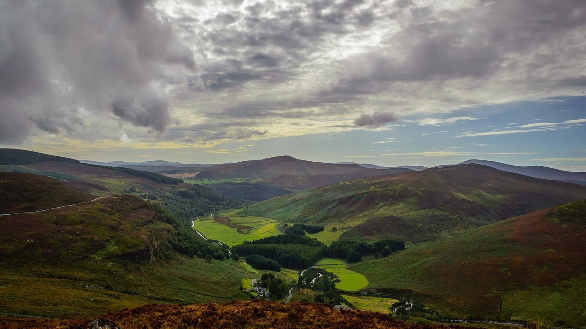

Race, Wicklow Gap

Behind
Best +0:01
371W
Target 418 W-47 W
- Cadence
- 87rpm
- Heart
- 140bpm
- Speed
- 26.5km/h
Work14 of 23
0:41
Next: · 2:00 at level 13
-1.6%
335 m climbed
10.15 km
22
Resistance / 32
Solo races your best-time ghost: position reads Ahead or Behind, and solo alone gets a Pause button. Frozen at 22:19.